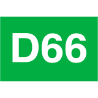

Twee schermen: het overzicht dat het laatste geanalyseerde debat vooropzet, en de onderwerppagina waar pro en contra als veegbare tabbladen naast elkaar staan met de correspondentiekaart erboven. Navigatie via een tabbalk onderaan.
Wie zegt wat.
Kamerleden geprofileerd op argumenten en stijl in gepolariseerde debatten. Terug te zien in de video van de bijdrage, steeds bijgewerkt.
Snel en streng stikstof terugdringen versus ruimte voor landbouw behouden.

D66 415"We listen and we don't judge."
Snel en streng stikstof terugdringen versus ruimte voor landbouw behouden. Wat pro en contra hier betekenen, geldt alleen voor dit onderwerp.
Partijen en tags dichter bij elkaar worden vaker samen gezien. Alleen de uitersten zijn benoemd. Het middenveld — CDA, NSC, ChristenUnie, DENK, Volt, GroenLinks-PvdA en PvdD — ligt te dicht op elkaar voor labels: tik op een punt voor de naam en het filter.
"De rechter heeft ons twee keer teruggestuurd; zonder een harde reductiedatum blijft elke vergunning aanvechtbaar."
Volgens woordvoerder D66, Tweede Kamer
"We schuiven de rekening door naar boeren die straks helemaal geen keuze meer hebben."
Volgens woordvoerder GroenLinks-PvdA, Tweede Kamer
"Een gedwongen krimp kost dit land zijn voedselproductie en levert geen enkele hectare natuur op."
Volgens woordvoerder BBB, Tweede Kamer
"De Habitatrichtlijn vraagt een resultaat, geen jaartal dat wij hier politiek verzinnen."
Volgens woordvoerder VVD, Tweede Kamer
"Voorzitter, we behandelen vandaag een brief die we vorige week nog niet hadden."
Volgens woordvoerder SGP, Tweede Kamer